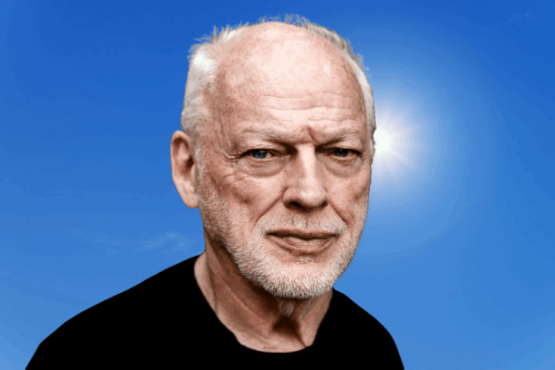

David Gilmour
Born: 06 March 1946
Age:
Years Active: 1963–present
Genre/s: Progressive rock, psychedelic rock, art rock, blues rock
Label/s: EMI Columbia, Harvest, Capitol, Columbia, Sony, EMI
Member of: Pink Floyd
David Jon Gilmour (born 6 March 1946) is an English musician best known for being the lead guitarist of the English rock band Pink Floyd. He joined in 1967, shortly before the departure of founding member Syd Barrett. By the early 1980s, Pink Floyd had become one of the highest-selling and most acclaimed acts in music history. Following the departure of Roger Waters in 1985, Pink Floyd continued under Gilmour's leadership and released the studio albums A Momentary Lapse of Reason (1987), The Division Bell (1994) and The Endless River (2014).
Gilmour has released five solo studio albums: David Gilmour (1978), About Face (1984), On an Island (2006), Rattle That Lock (2015) and Luck and Strange (2024). He has achieved three number-one solo albums on the UK Albums Chart, and six with Pink Floyd. He produced two albums by the Dream Academy, and is credited for bringing the singer-songwriter Kate Bush to public attention, paying for her early recordings and helping her find a record contract.
As a member of Pink Floyd, Gilmour was inducted into the US Rock and Roll Hall of Fame in 1996, and the UK Music Hall of Fame in 2005. In 2003, Gilmour was made a Commander of the Order of the British Empire (CBE). He received the award for Outstanding Contribution at the 2008 Q Awards. In 2023, Rolling Stone named him the 28th-greatest guitarist.
Gilmour has taken part in projects related to issues including animal rights, environmentalism, homelessness, poverty, and human rights. He has married twice and is the father of eight children. His wife, the novelist Polly Samson, has contributed lyrics to many of his songs.